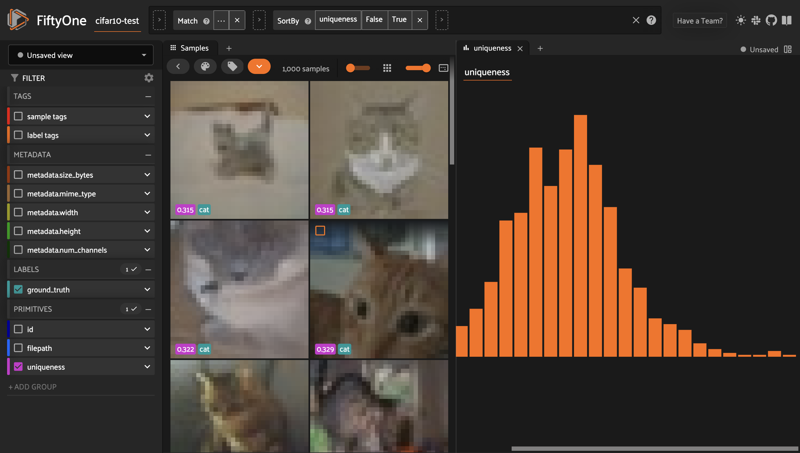

FiftyOne Basics ¶¶
This page provides a brief overview of FiftyOne’s basic concepts.
Datasets ¶¶
The Dataset class is the core data structure in FiftyOne, allowing you to
represent your data and manipulate it through the Python library and the
FiftyOne App.
FiftyOne Datasets allow you to easily load, modify, visualize, and evaluate your data along with any related labels (classifications, detections, etc). They provide a consistent interface for loading images, videos, annotations, and model predictions into a format that can be visualized in the FiftyOne App, synced with your annotation source, and shared with others.
If you have your own collection of data, loading it as a Dataset will allow
you to easily search and sort your samples. You can use FiftyOne to identify
unique samples as well as possible mistakes in your labels.
If you are training a model, its predictions and associated data such as
embeddings and logits can be loaded into your Dataset. The FiftyOne App makes
it easy to visually debug what your model has learned, even for complex label
types like polygons and segmentation masks. With this knowledge, you can update
your Dataset to include more representative samples and samples that your
model found difficult into your training set.
Note
Check out creating FiftyOne datasets for more information about loading your data into FiftyOne.
A Dataset is composed of multiple Sample objects which contain Field
attributes, all of which can be dynamically created, modified and deleted.
FiftyOne uses a lightweight non-relational database to store datasets, so you
can easily scale to datasets of any size without worrying about RAM
constraints on your machine.
Datasets are ordered collections of samples. When a Sample is added to a
Dataset, it is assigned a unique ID that can be used to retrieve the sample
from the dataset.
Slicing and other batch operations on datasets are done through the use of
dataset views. A DatasetView provides a view into the
Dataset, which can be filtered, sorted, sampled, etc. along various axes to
obtain a desired subset of the samples.
Learn more about using datasets
import fiftyone as fo
# Create an empty dataset
dataset = fo.Dataset("test-dataset")
print(dataset)
Name: test-dataset
Media type: None
Num samples: 0
Persistent: False
Tags: []
Sample fields:
id: fiftyone.core.fields.ObjectIdField
filepath: fiftyone.core.fields.StringField
tags: fiftyone.core.fields.ListField(fiftyone.core.fields.StringField)
metadata: fiftyone.core.fields.EmbeddedDocumentField(fiftyone.core.metadata.Metadata)
created_at: fiftyone.core.fields.DateTimeField
last_modified_at: fiftyone.core.fields.DateTimeField
Samples ¶¶
Samples are the atomic elements of a Dataset that store all the information
related to a given piece of data (e.g., an image or video).
All Sample instances store the path to their source data on disk in their
filepath field. Any number of fields can be dynamically added to samples to
store additional custom information about the sample.
Learn more about using samples
import fiftyone as fo
# An image sample
sample = fo.Sample(filepath="/path/to/image.png")
# A video sample
sample = fo.Sample(filepath="/path/to/video.mp4")
Fields ¶¶
Fields are attributes of Sample instances that store customizable information
about the samples. Thinking of a Dataset as a table where each row is a
Sample, each column of the table is a Field.
All samples must have their filepath field populated, which points to the
source data for the sample on disk. By default, samples are also given id,
media_type, tags, metadata, created_at, and last_modified_at fields
that store common information:
import fiftyone as fo
sample = fo.Sample(filepath="/path/to/image.png")
print(sample)
<Sample: {
'id': None,
'media_type': 'image',
'filepath': 'path/to/image.png',
'tags': [],
'metadata': None,
'created_at': None,
'last_modified_at': None,
}>
Custom fields can contain any Python primitive data type:
-
BooleanField: contains Pythonboolinstances -
IntField: contains Pythonintinstances -
FloatField: contains Pythonfloatinstances -
StringField: contains Pythonstrinstances -
DateField: contains Pythondateinstances -
DateTimeField: contains Pythondatetimeinstances -
ListField: contains Pythonlistinstances -
DictField: contains Pythondictinstances
The elements of list and dict fields may be homogeneous or heterogeneous, and may even contain nested lists and dicts. Fields can also contain more complex data types like labels.
Fields can be dynamically created, modified, and deleted. When a new Field is
assigned to a Sample in a Dataset, or a Sample with new fields is added
to a Dataset, the appropriate fields are automatically added to the dataset’s
schema and thus accessible on all other samples in the dataset.
Note
If a Field has not been set on a particular Sample in a Dataset, its
value will be None.
import fiftyone as fo
sample = fo.Sample(filepath="/path/to/image.png")
sample["quality"] = 89.7
sample["keypoints"] = [[31, 27], [63, 72]]
sample["geo_json"] = {
"type": "Feature",
"geometry": {"type": "Point", "coordinates": [125.6, 10.1]},
"properties": {"name": "camera"},
}
dataset = fo.Dataset("fields-test")
dataset.add_sample(sample)
print(dataset)
Name: fields-test
Media type: image
Num samples: 1
Persistent: False
Tags: []
Sample fields:
id: fiftyone.core.fields.ObjectIdField
filepath: fiftyone.core.fields.StringField
tags: fiftyone.core.fields.ListField(fiftyone.core.fields.StringField)
metadata: fiftyone.core.fields.EmbeddedDocumentField(fiftyone.core.metadata.ImageMetadata)
created_at: fiftyone.core.fields.DateTimeField
last_modified_at: fiftyone.core.fields.DateTimeField
quality: fiftyone.core.fields.FloatField
keypoints: fiftyone.core.fields.ListField
geo_json: fiftyone.core.fields.DictField
Learn more about sample fields
Media type ¶¶
When a Sample is created, its media type is inferred from the filepath to
the source media and exposed via the media_type attribute of the sample.
Tags ¶¶
All Sample instances have a tags attribute, which stores a list of strings
that can be used flexibly to store information about a sample.
A typical use case is to tag the dataset split ( test, train, validation)
to which the Sample belongs. However, you are free to use tags however you
like.
See more information about using tags
import fiftyone as fo
sample = fo.Sample(filepath="/path/to/image.png", tags=["train"])
sample.tags.append("my_favorite_samples")
print(sample.tags)
# ["train", "my_favorite_samples"]
Metadata ¶¶
All Sample instances have a metadata attribute that stores type-specific
metadata about the source media of the sample.
Learn more about adding metadata to your samples
import fiftyone as fo
sample = fo.Sample(filepath="/path/to/image.png")
dataset = fo.Dataset()
dataset.add_sample(sample)
# Populate the `metadata` field of all samples in the dataset
dataset.compute_metadata()
print(dataset.first())
<Sample: {
'id': '60302b9dca4a8b5f74e84f16',
'media_type': 'image',
'filepath': '/path/to/image.png',
'tags': [],
'metadata': <ImageMetadata: {
'size_bytes': 544559,
'mime_type': 'image/png',
'width': 698,
'height': 664,
'num_channels': 3,
}>,
'created_at': datetime.datetime(2024, 7, 22, 5, 16, 10, 701907),
'last_modified_at': datetime.datetime(2024, 7, 22, 5, 16, 10, 701907),
}>
Labels ¶¶
Labels store semantic information about the sample, such as ground annotations or model predictions.
FiftyOne provides label classes for many common tasks:
-
Regression: a regression value
-
Classification: a classification label
-
Classifications: a list of classifications (typically for multilabel tasks)
-
Detections: a list of object detections (with optional instance masks)
-
Polylines: a list of polylines or polygons in an image
-
Cuboids: a list of 2D cuboids in an image
-
Rotated bounding boxes: a list of rotated boxes in an image
-
Keypoints: a list of keypoints in an image
-
Segmentation: a semantic segmentation mask for an image
-
Heatmap: an intensity heatmap for an image
-
Temporal detection: events with a temporal frame support in a video
-
3D detections: a list of 3D detections in a scene
-
3D polylines: a list of 3D polylines or polygons in a scene
-
GeoLocation: geolocation point(s), line(s), or polygon(s)
Using FiftyOne’s Label types enables you to visualize your labels in the
the App.
Learn more about storing labels in your samples
import fiftyone as fo
sample = fo.Sample(filepath="/path/to/image.png")
sample["weather"] = fo.Classification(label="sunny")
sample["animals"] = fo.Detections(
detections=[\
fo.Detection(label="cat", bounding_box=[0.5, 0.5, 0.4, 0.3]),\
fo.Detection(label="dog", bounding_box=[0.2, 0.2, 0.2, 0.4]),\
]
)
print(sample)
<Sample: {
'id': None,
'media_type': 'image',
'filepath': 'path/to/image.png',
'tags': [],
'metadata': None,
'created_at': None,
'last_modified_at': None,
'weather': <Classification: {'label': 'sunny', 'confidence': None, 'logits': None}>,
'animals': <Detections: {
'detections': [\
<Detection: {\
'label': 'cat',\
'bounding_box': [0.5, 0.5, 0.4, 0.3],\
'confidence': None,\
'attributes': {},\
}>,\
<Detection: {\
'label': 'dog',\
'bounding_box': [0.2, 0.2, 0.2, 0.4],\
'confidence': None,\
'attributes': {},\
}>,\
],
}>,
}>
DatasetViews ¶¶
Dataset views are a powerful tool for exploring your datasets. You can use
DatasetView instances to search, filter, sort, and manipulate subsets of your
datasets to perform the analysis that you need.
Get a full walkthrough of dataset views
import fiftyone as fo
import fiftyone.zoo as foz
import fiftyone.brain as fob
from fiftyone import ViewField as F
dataset = foz.load_zoo_dataset("cifar10", split="test")
cats = dataset.match(F("ground_truth.label") == "cat")
fob.compute_uniqueness(cats)
similar_cats = cats.sort_by("uniqueness", reverse=False)
session = fo.launch_app(view=similar_cats)

Aggregations ¶¶
Dataset views allow you to search for samples in your datasets and filter their contents. Complementary to this, one is often interested in computing aggregate statistics about a dataset or view, such as label counts, distributions, and ranges.
FiftyOne provides a powerful aggregations framework that provides a highly-efficient approach to computing statistics about your data.
Learn more about using aggregations
import fiftyone as fo
import fiftyone.zoo as foz
from fiftyone import ViewField as F
dataset = foz.load_zoo_dataset("quickstart")
# Compute a histogram of the predicted labels in the `predictions` field
print(dataset.count_values("predictions.detections.label"))
# {'bicycle': 13, 'hot dog': 8, ..., 'skis': 52}
# Compute the range of confidences of `cat` predictions in the dataset
print(
dataset
.filter_labels("predictions", F("label") == "cat")
.bounds("predictions.detections.confidence")
)
# (0.05223553627729416, 0.9965479969978333)